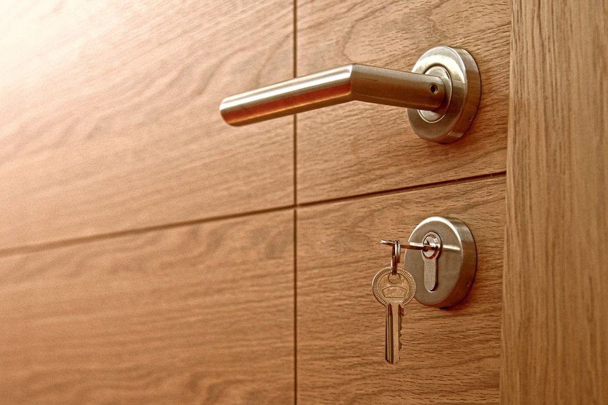
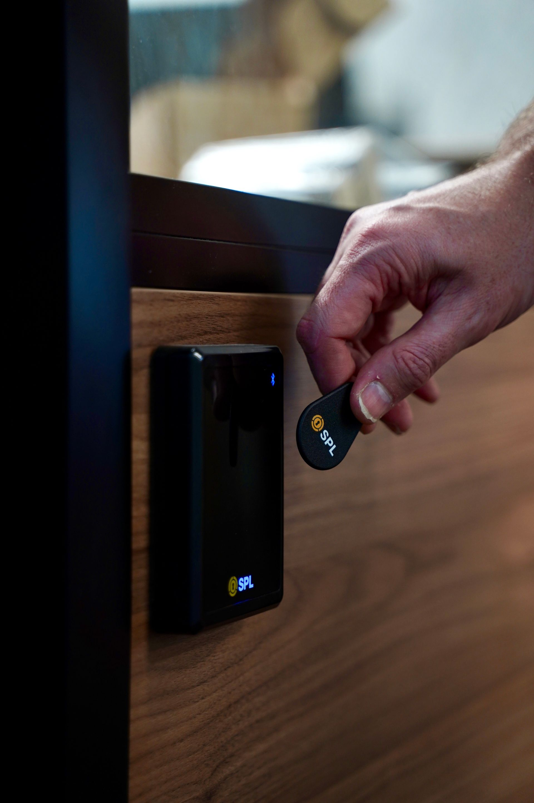
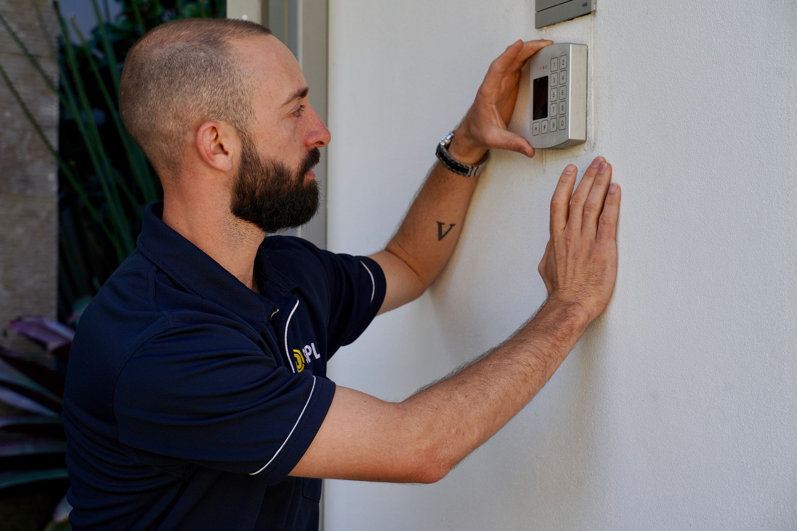
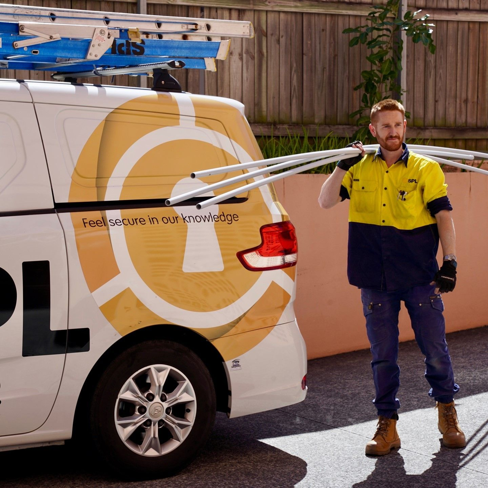

On this page
AT A GLANCE
At SPL Security Solutions, we specialise in protecting your home, business, and valuables with professional locksmith services you can rely on.
Secure Your Property with Trusted Commercial Locksmiths on the Gold Coast.
At SPL Security Solutions, we specialise in protecting your home, business, and valuables with professional locksmith services you can rely on. From advanced lock installations to urgent lockout assistance, our team is available 24/7 to keep you safe.
Commercial Locksmiths Gold Coast – Residential & Business Services
SPL Security Solutions is the trusted choice for commercial and residential locksmith services across the Gold Coast. Our experienced residential and commercial locksmith Gold Coast residents prefer provides high-quality security solutions, from advanced lock systems to emergency locksmith assistance. With a commitment to excellence, reliability and customer satisfaction, we ensure that businesses and homeowners receive the highest level of protection.
We understand that security needs vary, which is why we tailor our services to meet individual requirements. Whether you need a comprehensive security upgrade, key cutting, lock repairs or emergency lockout assistance, our skilled locksmiths are ready to help. Free quotes are available, and we take pride in delivering top-tier locksmith solutions with superior service and quality products.


Whether you are looking to upgrade your existing locks, change the locks in a new property, or you lock yourself out of your home or business, SPL Security Solutions can help.
Our Commercial Locksmith Solutions in Gold Coast
Operating across the Gold Coast, SPL Security Solutions has gained invaluable experience in securing all types of properties and homes. Our workmanship is 100% guaranteed and we supply and install the best quality products from the top brands. Plus, for all those unforeseen incidents, we also offer a 24 hr emergency call-out service so you are never stranded.

Residential Locksmith Services for all Your Security Needs

Whether you have just moved to a new house and want to secure the premises. Or you want to upgrade the security system at your current property. Or perhaps you’ve locked yourself out of your home or business, there is help at hand. SPL Security Solutions have all the products, latest technology, experience and expertise to help you with all your security needs. No matter how big or small.
SPL Security Solutions are a leading provider of quality and competitive commercial locksmith services on the Gold Coast. We offer commercial locksmith and security services to businesses of any scale. No job is too small or too big for us. We deliver fast emergency services to lock outs and can sort out any issues with your doors or locks. Our services also include a wide range of security solutions for peace of mind.

Why Hiring a Professional Commercial Locksmith Gold Coast Matters

Many people only think about locksmith services during emergencies, but professional locksmiths provide a range of essential security benefits beyond just unlocking doors. Choosing a licensed and skilled locksmith ensures quality workmanship, high-security solutions and expert advice tailored to your needs.
Some of the key advantages of hiring a professional locksmith include:
- Security assessment – Locksmiths can identify weak points and recommend improvements.
- Expert lock installation – Properly installed locks provide better resistance against break-ins.
- Emergency services – A locksmith provides fast response times for urgent lock issues.
- Specialised key services – Including rekeying, key duplication and restricted key systems.
- Advanced security solutions – Such as smart locks, CCTV integration and access control systems.
Common Misconceptions About Locksmiths
There are several myths surrounding locksmith services that often lead to misunderstandings about what locksmiths can do. Let’s clear up some of the most common misconceptions:
Myth 1: Locksmiths Only Work With Traditional Locks
While locksmiths are experts in traditional key and lock systems, they also specialise in electronic security, smart locks and access control solutions for businesses and homes.
Myth 2: You Should Only Call a Locksmith in an Emergency
Many assume locksmiths are only needed when locked out, but professional locksmiths offer preventative security services that can help you avoid emergencies altogether.
Myth 3: All Locks Offer the Same Protection
Not all locks provide the same level of security. Cheap or outdated locks can be bypassed easily, while high-security options offer better resistance against forced entry.
Myth 4: DIY Lock Installation is Just as Effective
Incorrectly installing a lock can compromise security. A professional locksmith ensures proper installation and alignment, preventing future security risks.

Keyless Entry Systems for Modern Security Solutions
Traditional locks have been a trusted security measure for decades, but keyless entry systems are becoming the preferred choice for businesses and homeowners looking for enhanced convenience and security. These systems eliminate the need for physical keys, reducing the risk of lost or stolen keys compromising security.
With keyless entry, users can access their property using PIN codes, key cards, biometrics or smartphone apps. Businesses benefit from customisable access control, while homeowners enjoy the convenience of remote access. Our residential and commercial locksmith Gold Coast residents trust installs high-quality keyless entry systems, ensuring secure and seamless access to your property.
Choosing the Right Security System for Your Needs
Not all security systems are the same, and selecting the right one depends on your property, budget and security requirements. Our team provides expert recommendations for:
- Deadbolts and high-security locks for maximum protection.
- Electronic and keyless entry systems for businesses and homes.
- CCTV and alarm systems for 24/7 monitoring.
- Restricted key systems to prevent unauthorised duplication.
We work with leading security brands to ensure you get reliable, long-lasting security solutions.

Why You Should Choose SPL Security Solutions

- 24/7 emergency locksmith service
- Technicians across the entire Gold Coast, so when you’re hunting for a “locksmith near me”, no matter where you are we have you covered
- 60 minutes response time or less!
- All popular brands of locks including Lockwood, Madinoz, Parisi, Pittella, Gainsborough, Nidus and Olivari Bellevue
- If you need locks that will be approved by your insurance company we have a large range of locks that conform to Australian Standards
- All technicians are fully qualified with experience to tackle any locksmith issue
24/7 Emergency Call Out Service
SPL Security Solutions offer a 24 hr emergency mobile locksmith service to help you out of any situation you might find yourself in. Our highly trained and professional locksmiths are on standby around the clock. We are only a phone call away so get in touch today.

Contact SPL Security Solutions for a Free Quote Today

If you’re looking for a trusted locksmith in the Gold Coast, SPL Security Solutions is here to help. Whether you need new locks, a security system upgrade or emergency locksmith assistance, our skilled team is ready to assist.
Get in touch today for a free quote and find out why we’re the residential and commercial locksmith Gold Coast residents rely on for superior security solutions.
Contact Details
24/7 Emergency Locksmiths or Security Tech